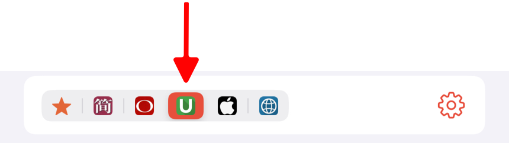
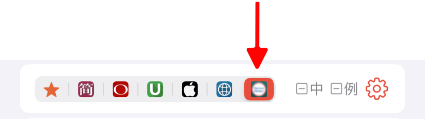

聽閱支援匯入 MDICT 格式的詞典。此外，您還可以從我們提供的網盤下載用戶分享的、專為聽閱優化的詞典。這些詞典與聽閱內建詞典一樣，支持選擇單詞的單個釋義進行學習。
匯入 MDICT 詞典
MDICT 詞典通常包含三類文件：mdx、mdd 和 css。您可以通過以下步驟將詞典文件匯入到聽閱中。
-
在電腦上整理詞典文件
將所有與待匯入的詞典相關的文件放入一個文件夾中。建議每個詞典單獨創建一個文件夾，便於管理。 -
將詞典文件同步到設備
-
iPhone/iPad
-
Mac
- 打開「終端」應用。
- 在終端中輸入以下命令（請將
xxx替換為你的電腦用戶名）打開詞典文件所在的目錄：
open /Users/xxx/Library/Containers/com.xuehu.words/Data/Documents/dicts
- 將你的詞典文件夾拷貝到此目錄。
-
-
重啟聽閱
完成同步後，重啟聽閱應用，詞典將自動加載。 -
詞典查詞
查詞時，在詞典詳情頁，點按菜單欄圖標 即可查看匯入的詞典。
即可查看匯入的詞典。
如果菜單欄中沒有該圖標，請點擊右側的設置按鈕，然後在詞典設置頁面勾選“用戶詞典”即可。
匯入聽閱詞典
聽閱詞典是用戶分享的、專為聽閱優化的詞典。這些詞典與應用內建詞典一樣，支持選擇單詞的單個釋義進行學習。您可以通過以下方式從網盤下載並匯入到聽閱中使用。
在電腦上下載
- 訪問百度網盤鏈接，下載後綴為 ziptd 的詞典文件。
- 下載完成後，將文件後綴從 ziptd 改為 zip，然後解壓文件。
- 按照匯入 MDICT 詞典的步驟，將解壓後的文件匯入到聽閱應用中。
- 匯入完成後，重啟聽閱。
在iPhone/iPad上下載
- 通過「百度網盤」應用打開分享鏈接，下載擴展名為 ziptd 的詞典文件。
- 下載完成後，點擊文件，選擇“用其他應用打開”，然後選擇“儲存到文件”並保存到聽閱目錄中。
- 打開「文件」應用，選擇“瀏覽” -> “我的iPhone” -> “聽閱”，找到保存的詞典文件。長按文件，選擇“重新命名”，將後綴名 ziptd 改為 zip。
- 點擊 zip 文件進行解壓。
- 解壓完成後，重啟聽閱。
匯入後，菜單欄將會顯示專門的圖標來標識該詞典。例如，匯入“韋氏高階英漢雙解詞典.ziptd”後的菜單欄如下：

查詞時，只需點擊該詞典圖標即可查看匯入的詞典。如果菜單欄中沒有該圖標，請點擊右側的設置按鈕，在詞典設置頁面勾選您匯入的詞典即可。